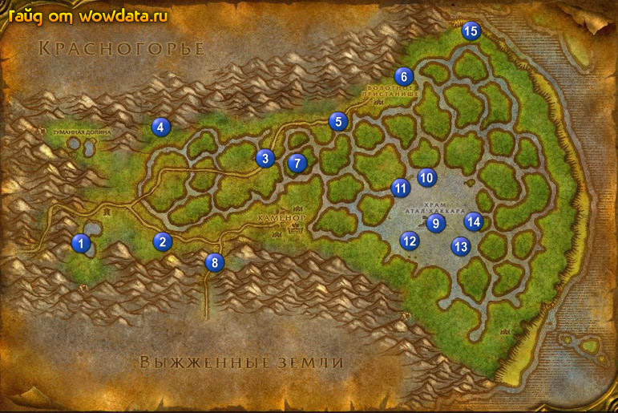

1) Идите бейте дракончиков 1 (12, 58) для <Сонная пыль в болоте> (маленький шанс дропа, зато мобы респятся быстро).
2) Начните <Атака тварей> 2 (26, 59) и делайте его убивая 3 вида мобов тут и на севере.
3) Идите наверх и найдите Нобору Дубина, он кружит около 3 (43, 38) и из него падает вещь которая начинает <Нобору Дубина>.
4) Идите назад 2 (26, 59) и закончите <Россыпи Слез>, начните <Пропавший караван>.
5) Следуйте наверх 4 (25, 31) где закончите <Нобору Дубина>, начните <Кристаллы дренейского аметиста>.
6) У Анахорет Авуун начните <Милость к проклятым> и у Холаару начните <Озеро Слез>.
7) Отправляйтесь на северо-восток 5 (54, 29) и начинайте собирать кристаллы для <Кристаллы дренейского аметиста>.
8) В лагерях тут же убейте Проклятый из племени Заблудших для <Милость к проклятым>.
9) Когда вы дойдете до последнего лагеря с NPC в клетке 6 (65, 18) откройте сундук на телеге и возьмите мешочек для <Пропавший караван>.
10) Затем начните <Побег Галена> (у нпс в клетке).
11) Сопроводите парня, когда квест будет выполнен идите ищите его лагерь 7 (48, 39), откройте сундук чтобы закончить квест.
12) Идите закончите <Пропавший караван> 2 (26, 59), начните <Плавник>.
13) Бегите по дороге до поворота, сверните на юг и бегите в Выжженные земли 8 и дальше по дороге в город в правом верхнем углу карты, откройте пункт полета и летите в Сумеречный лес.
14) Начните <Поставки для Стражей Пустоты> у Начальник стражи Соригел.
15) Летите обратно в и закончите <Поставки для Стражей Пустоты>.
16) Бегите обратно в Болто Печали.
17) Бегите к озеру в котором находится Затонувший храм 9 (70, 54) пока вы не увидите сообщение что <В поисках Храма> выполнен, также под водой ищите Артефакт Аталаи для <Озеро Слез> (вот 5 точек их появления: 10 11 12 13 14. Но есть и больше).
18) Идите наверх на пляж 15 (76, 6) и убивайте Иловый краб и Чудовищный краб, пока идете по берегу на юг для <…и жуки.>, пока не выполните его. Также ищите Сухой плавник (в игре куски дерева, бревна) для <Плавник>.
19) Идите закончите <Плавник> 2 (26, 59), начните <Доставка груза>.
20) Идите закончите <Кристаллы дренейского аметиста> 4 (26, 31).
21) Закончите <Милость к проклятым> у Анахорет Авуун и <Озеро Слез> у Холаару.
22) Бегите вниз в Выжженные земли и закончите там <Доставка груза>.
23) Летите в Пиратская бухта и закончите там <Сонная пыль в болоте> в гостинице и начните <Сплетни для Крейвела>.
24) Сядьте на корабль в Кабестан, когда приплывете летите в и закончите там
<…и жуки.> в гостинице.
25) Летите в Пустоши.